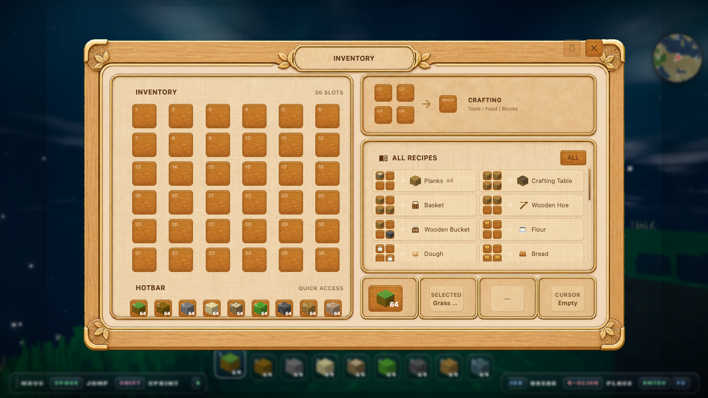
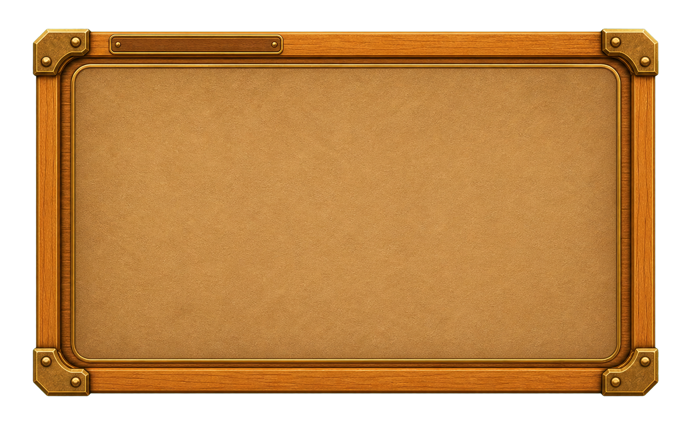
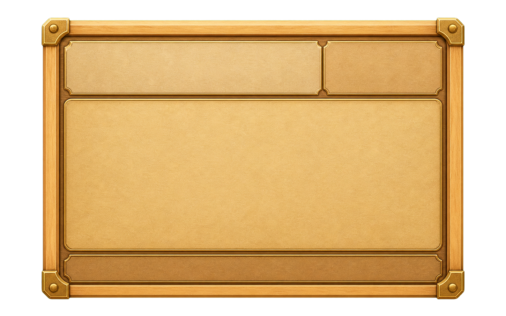
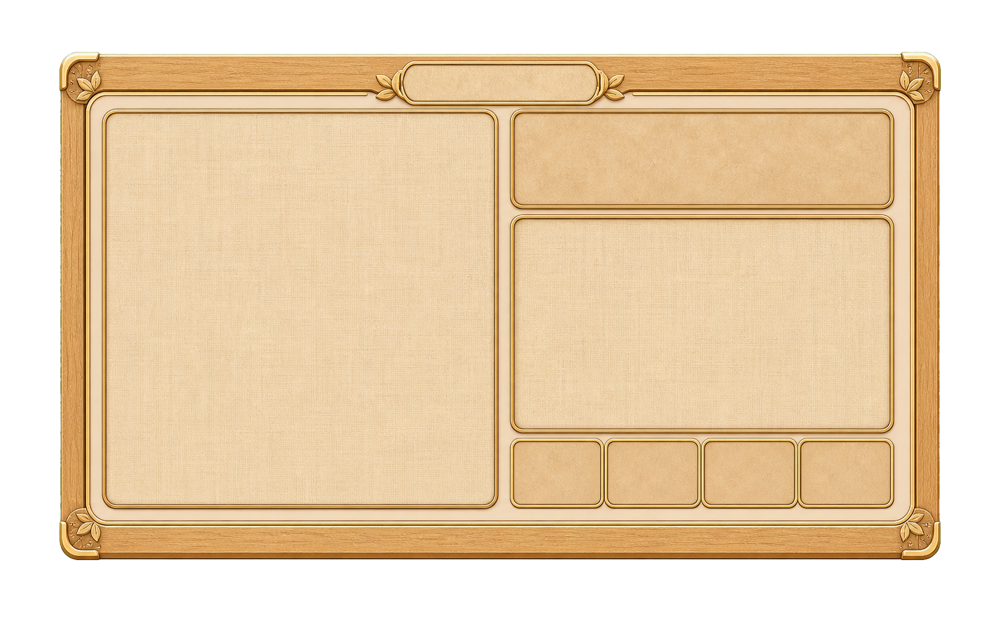
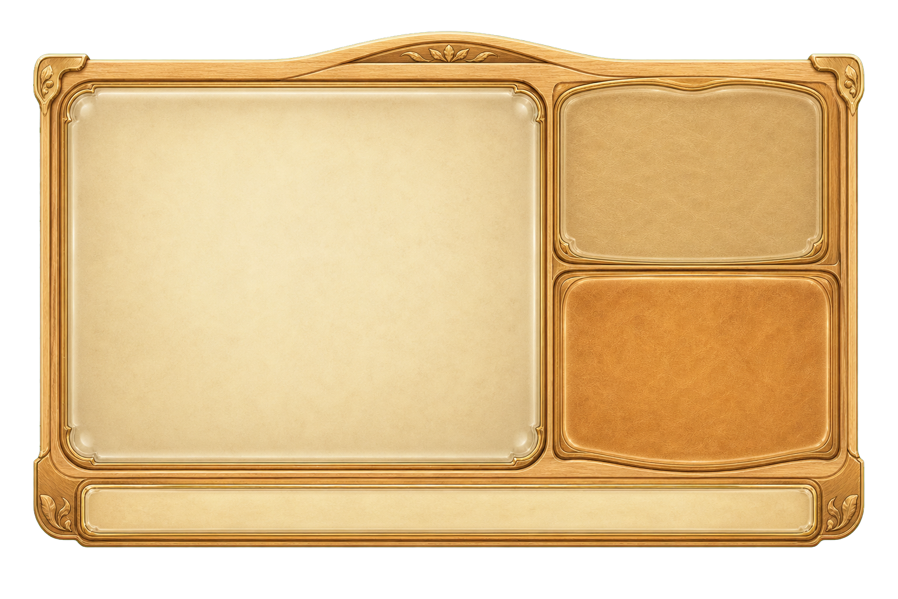
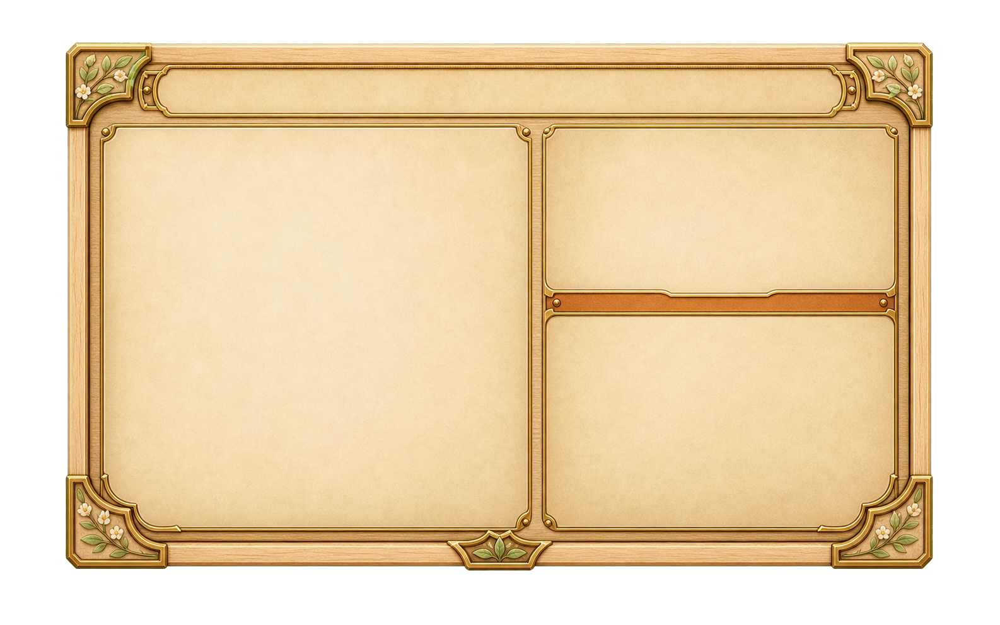

Dawnlight 인벤토리 C 적용 확인
후보 C를 인게임 인벤토리 배경으로 적용했습니다. 첫 이미지는 실제 게임 화면 캡처이고, 나머지는 비교용 빈 패널 후보입니다. 체크보드 영역은 투명도를 확인하기 위한 페이지 배경입니다.












후보 C를 인게임 인벤토리 배경으로 적용했습니다. 첫 이미지는 실제 게임 화면 캡처이고, 나머지는 비교용 빈 패널 후보입니다. 체크보드 영역은 투명도를 확인하기 위한 페이지 배경입니다.





